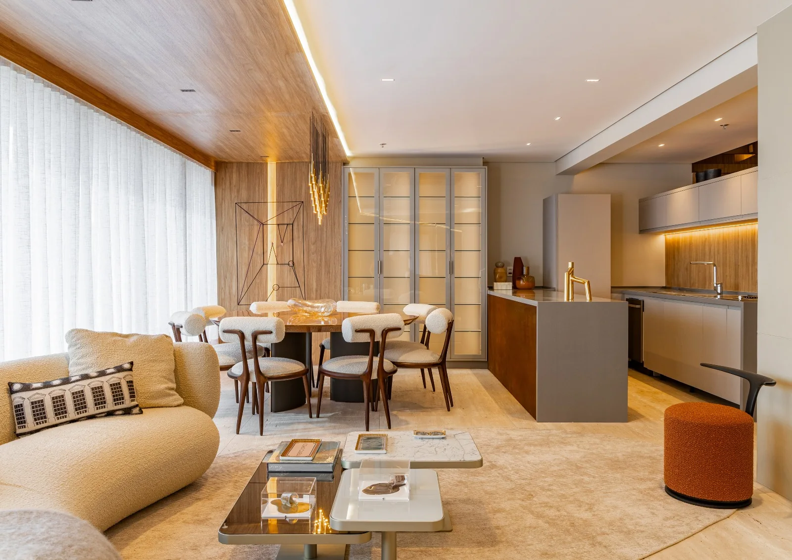
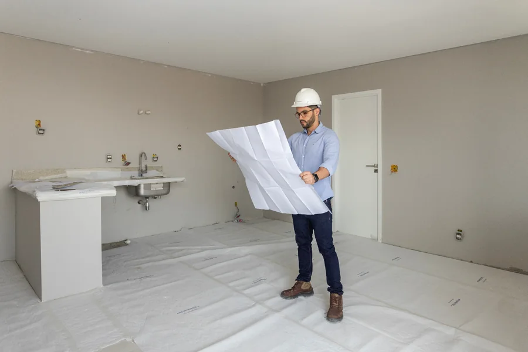
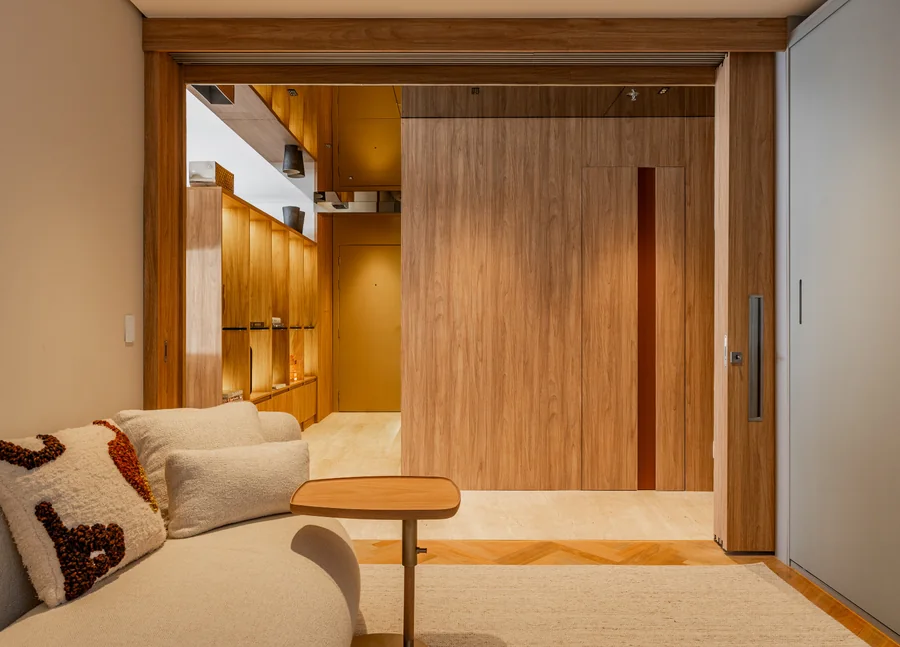
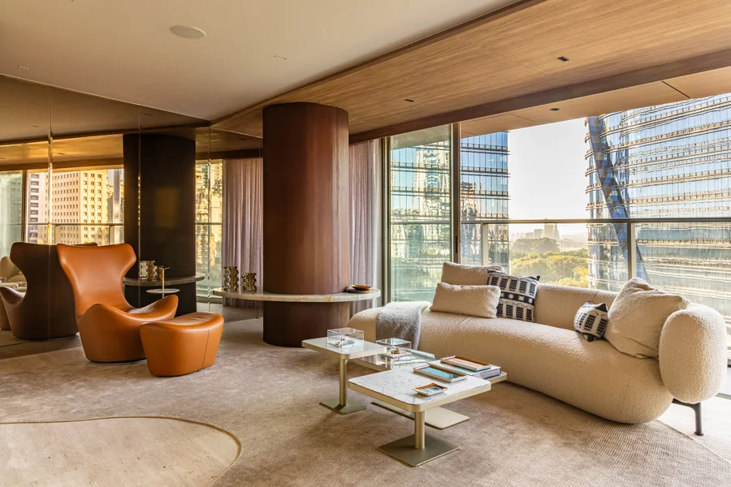
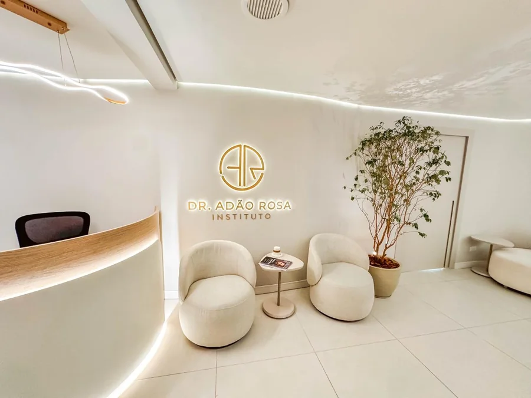
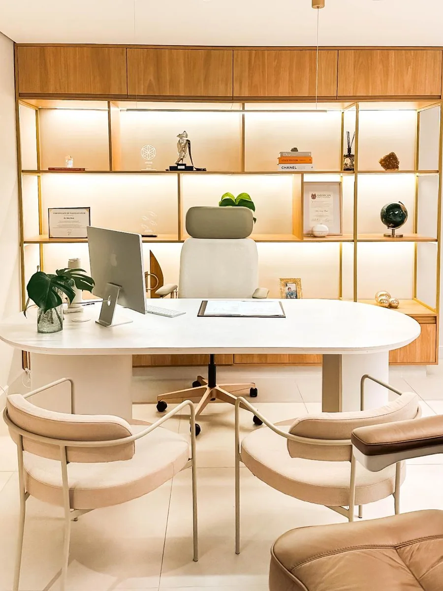
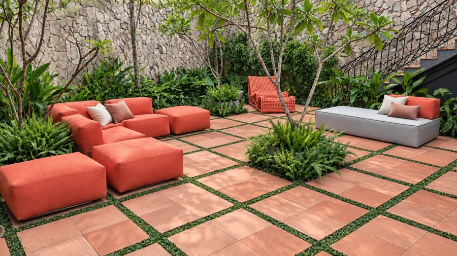

Reformas em São Paulo
Role para construirSua obra completa,com qualidade e no prazo.
Projeto, orçamento, gestão e execução com um só responsável, do primeiro traço à entrega das chaves.
Por que a Pronova
Um engenheiro do início ao fim. Orçamento fechado antes do primeiro tijolo. Cronograma, valores e fotos da obra na palma da sua mão.

Principais obras
Obras que saíram
do papel.





Como funciona · do projeto à entrega
Quatro etapas,
um só responsável.
Visita
Entendemos o espaço, o que você quer e quanto pretende investir.
Projeto
Definimos com você a solução, os materiais e os acabamentos.
Orçamento e cronograma
Você recebe valores e datas por etapa antes de começar.
Execução e entrega
Coordenamos a obra e entregamos o imóvel pronto para uso.
Quem está à frente
Caio
Fernandes
Formado em Engenharia Civil e Gestão de Projetos pela Universidade Presbiteriana Mackenzie. Há mais de 10 anos faço obras e reformas residenciais e comerciais em São Paulo, e atuo também como gerente de incorporação.
Criei a Pronova para que você tenha projeto, orçamento, gestão e execução com um só responsável.
- Um só responsável sem intermediários
- Orçamento fechado antes de começar
- Obra na palma da mão painel online
Seu próximo passo
Vamos tirar a sua
obra do papel?
Conte o que você quer fazer e agendamos a visita. O orçamento é sem compromisso.